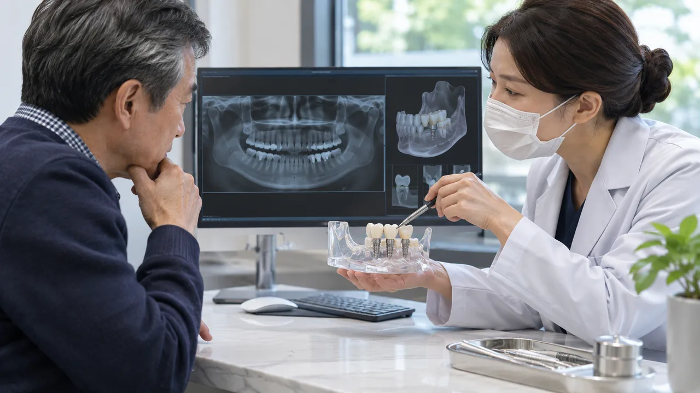
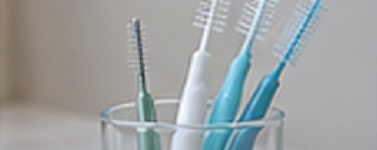
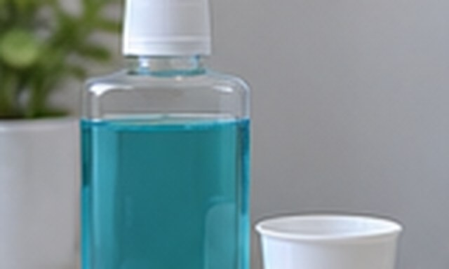
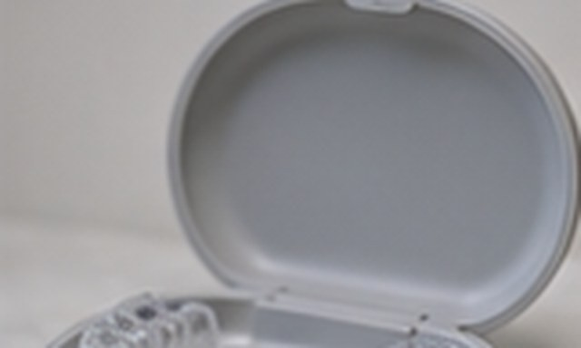
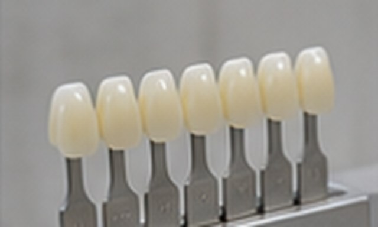
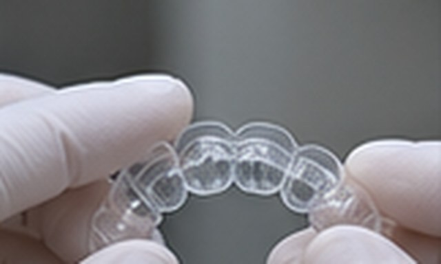
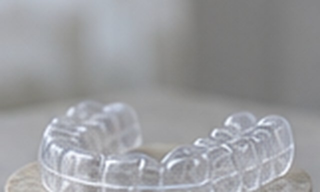
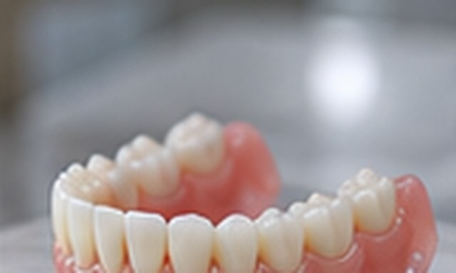
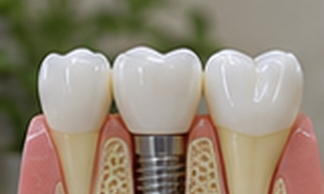
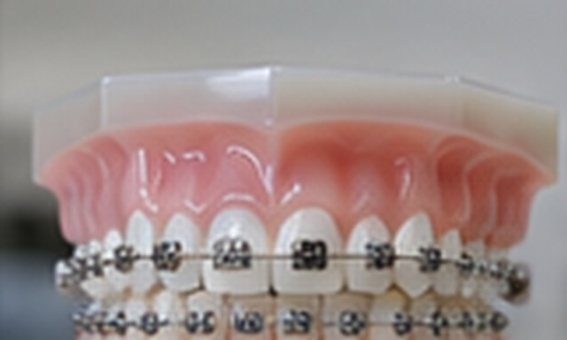

치아가 없으신
환자분들을 위한
여문치과의
솔루션
다수의 치아를 임플란트로 회복할 때는 잇몸뼈와 교합, 보철물의 청결 관리까지 포함해 단계별 계획을 수립합니다.
역사 깊은 치과에서 쌓아온
임플란트 수술에 대한 노하우
여문치과는 2010년부터 시작하여 진료 시간과 방문 위치, 예약 절차는 내원 전에 안내 페이지에서 확인할 수 있습니다. 연령만으로 치료 방법을 정하지 않고 잇몸뼈와 전신 건강, 회복 여건을 살펴 임플란트 가능성을 검토합니다.
통증, 전신질환, 비용 등이
걱정된다면,
여문치과에서
해결해드립니다.
비용 부담이나 통증, 전신질환 때문에 수술이 망설여진다면 현재 건강 상태와 가능한 치료 선택지를 먼저 상담합니다. 구강 상태에 따라 검토하는 임플란트 치료 방법을 구비하고 있습니다.
시간과 비용을 줄여주는 중장년 임플란트
임플란트는 잇몸과 뼈의 상태를 확인하고 내원 일정을 고려해 계획합니다.

치료 계획과 예상 과정을 함께 살펴봅니다.60대 중반 남성, 전체 임플란트
여러 치아를 회복하는 계획에서는 잇몸뼈와 턱의 중심, 위아래 치아가 맞물리는 상태를 함께 고려합니다.
#치료기간 9개월
#여러 치아를 회복하기 위한 단계별 임플란트 계획
수술 전에는 발생 가능한 불편과 주의점을 의료진에게 듣고, 현재 건강 상태를 함께 확인한 뒤 진행합니다.
60대 중반 남성, 전체 임플란트
틀니 사용 뒤 임플란트를 계획할 때 뼈의 양이 부족하면 추가 검사와 뼈 보강 치료가 필요한지 검토합니다.
#치료기간 10개월
#여러 치아를 회복하기 위한 단계별 임플란트 계획
수술 전에는 발생 가능한 불편과 주의점을 의료진에게 듣고, 현재 건강 상태를 함께 확인한 뒤 진행합니다.
70대 초반 남성, 전체 임플란트
전신질환과 복용 약, 틀니 사용 중 불편을 상담에서 확인하고 검사 결과에 맞춰 임플란트 치료 계획을 세웁니다.
#치료기간 8개월
#여러 치아를 회복하기 위한 단계별 임플란트 계획
수술 전에는 발생 가능한 불편과 주의점을 의료진에게 듣고, 현재 건강 상태를 함께 확인한 뒤 진행합니다.
70대 초반 남성, 임플란트 틀니
오래 틀니를 사용한 뒤 임플란트를 고려한다면 잇몸뼈 두께와 틀니의 유지 상태를 검사해 치료 가능성을 살핍니다.
#치료기간 6개월
#치아 상실 범위에 맞춘 임플란트 치료 구성
수술 전에는 발생 가능한 불편과 주의점을 의료진에게 듣고, 현재 건강 상태를 함께 확인한 뒤 진행합니다.
60대 초반 남성, 전체 임플란트
어금니를 여러 개 잃은 경우에는 남은 뼈의 양과 씹는 힘을 살펴 보조 처치와 보철 계획을 세울 수 있습니다.
#치료기간 6개월
#임플란트 14개 식립
수준 높은 치료,
임플란트 수술
전담 의료진
임플란트 계획은 시술 방법뿐 아니라 진단 과정과 사후 관리 범위까지 살펴 결정하는 것이 좋습니다.
임플란트 상담에서는 구강 검사와 영상 자료를 검토해 현재 상태에 맞는 치료 선택지를 설명합니다. 복합적인 임플란트 치료는 검사 자료와 치료 단계별 판단을 바탕으로 담당 의료진이 계획을 세웁니다.

방문 횟수 감소,
수술시간 단축으로
멀리 거주하시거나
바쁜 일상을 겪는
시니어분들도 편안하게
치료 일정은 필요한 처치와 회복 상태에 따라 정하며, 내원 계획과 각 방문의 목적을 미리 설명합니다.
나이가 있는 환자의 임플란트 계획은 복용 약과 회복 여건, 잇몸뼈 상태를 함께 확인해 세웁니다.
핵심기술 01
고품격 3D CT를 통한
정밀 진단 시스템
일반 임플란트 (2D 파노라마)

평면 영상만으로 판단하기 어려운 경우에는 입체 촬영 자료를 함께 살펴 치아와 신경의 위치를 확인합니다.
컴퓨터 분석 임플란트 (3D CT)

입체 영상으로 턱뼈의 형태와 신경 위치를 살펴 식립 위치와 수술 계획을 세우는 데 참고합니다.
핵심기술 02
디지털 구강 스캐너를
활용한 정밀 진단
일반적인 고무 인상 채득

인상재를 이용하는 과정에서는 구역감이 생길 수 있고, 재료가 변형되면 본뜨기 결과에 차이가 생길 수 있습니다.
3D 입체 스캐너를 통한 인상 채득

구강 스캐너로 치아와 잇몸의 형태를 기록하면 보철물 설계에 필요한 입체 자료를 확인할 수 있습니다.
핵심기술 03
통증을 최소화하고
내원횟수를 줄이는 시술
절개 시술

잇몸 절개로 인한 붓기와 출혈이 발생
컴퓨터 분석 가이드 시술

절개 범위와 식립 방법은 뼈와 잇몸의 상태를 확인해 결정합니다.
핵심기술 04
염증을 최소화하고
저작 기능을 향상시키는
맞춤 어버트먼트
기성 어버트먼트

기본 치수로 제조된 연결 부품을 선택하는 보철 설계
맞춤형 어버트먼트

잇몸 윤곽과 치아 배열을 본떠 개인별 보철물을 설계합니다.
치과치료에 대한
불안과 공포,
수면 치과치료를
고려해볼 수 있습니다.
정맥 진정은 긴 치료를 앞두고 긴장 완화를 고려할 때 상담할 수 있으며, 사전 평가와 회복 관찰이 필요합니다.
진정요법은 긴장이 큰 환자의 치료 부담을 덜 수 있으며, 적용 여부는 건강 상태를 살핀 뒤 결정합니다.